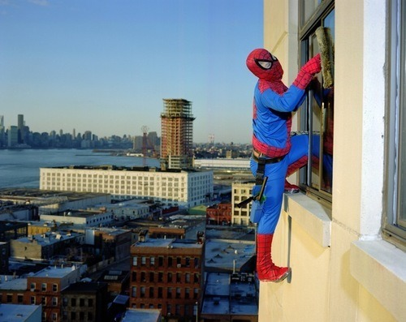

Wed, 15 Sep 2010 10:56:00 · New York · City · Mexico · Photography · SuperHero · Migrant
Migrant Workers Re-imagined as Superheroes
Mexican photographer and a former New York resident, Dulce Pinzon, casts the Mexican migrant workers of New York City as Superheroes ~ in costume, at their jobs and within our midst. 
~ Discover more of these Superheroes in their natural ‘habitat’ here.